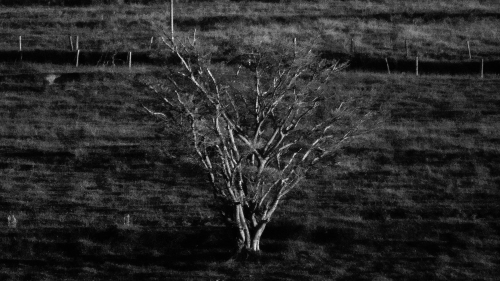

IMAGES FROM THE EDGE OF THE REAL
I work from a place of attention rather than intention. Images emerge when I remain open to what unfolds in the margins of me — events not sought, moments not staged, relations that appear briefly and dissolve.
My practice is rooted in observation as a reciprocal act: the observer alters what is observed, just as light alters the matter it touches. Photography, for me, operates in this unstable space between particle and wave, presence and trace, distance and involvement, where things entangle rather than resolve.
I am drawn equally to the natural and the constructed, to surfaces marked by time, chance, and use. Walking, waiting, and distraction are not obstacles but methods, ways of allowing the world to pass through me and enter the frame on its own terms.
Trabalho a partir da atenção, não da intenção. As imagens vêm quando fico aberta ao que aparece nas margens de mim. Eventos que não busco, momentos que não organizo, relações que surgem por um instante e somem.
Minha prática nasce da observação como um gesto recíproco: quem olha muda o que olha, assim como a luz muda a matéria que toca. Para mim, a fotografia habita esse espaço instável entre partícula e onda, presença e vestígio, distância e envolvimento. Lá onde as coisas se entrelaçam, em vez de se resolverem.
Sou atraída com igual força pelo natural e pelo construído, por superfícies marcadas pelo tempo, pelo acaso, pelo uso. Caminhar, esperar, me distrair não são obstáculos, mas jeitos de deixar o mundo passar por mim e entrar no quadro nos seus próprios termos.